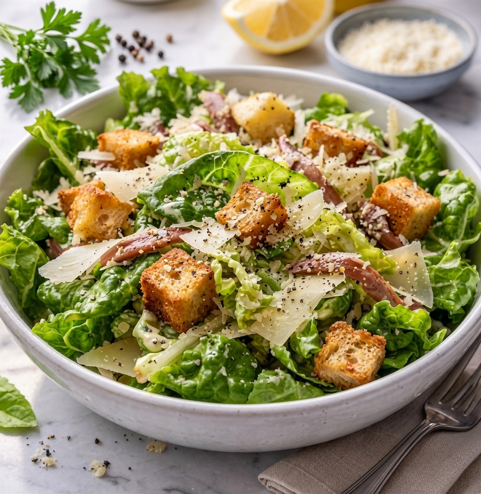

סלט קיסר
סלט קיסר מרענן וטעים עם עלי חסה פריכים, קרוטונים זהובים, גבינת פרמזן ורוטב קיסר עשיר ומפנק.

⏰ זמן הכנה: 20 דקות
🥗 כמות: 4 מנות
⭐ רמת קושי: קל
מצרכים
- 1 ראש חסה גדול
- 1 כוס קרוטונים
- חצי כוס גבינת פרמזן מגוררת
- 2 כפות שמן זית
- 1 שן שום כתושה
- 3 כפות מיונז
- 1 כף מיץ לימון
- 1 כפית חרדל
- מלח ופלפל לפי הטעם
אופן ההכנה
- שוטפים היטב את עלי החסה, מייבשים וקורעים לחתיכות בגודל בינוני.
- בקערה קטנה מערבבים מיונז, שום כתוש, מיץ לימון וחרדל.
- מוסיפים מעט מלח ופלפל ומערבבים עד לקבלת רוטב אחיד.
- מניחים את עלי החסה בקערת הגשה גדולה.
- מוסיפים את הקרוטונים ואת גבינת הפרמזן.
- יוצקים מעל את הרוטב ומערבבים בעדינות.
- מגישים מיד, כשהחסה והקרוטונים פריכים.